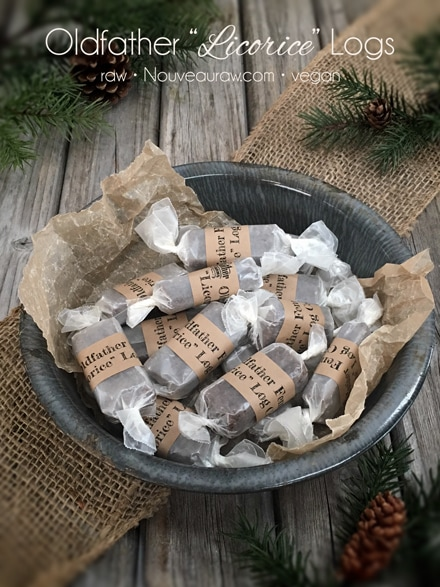

Oldfather “Licorice” Logs

~ raw, vegan, gluten-free, nut-free ~
I named these candies after…. me. lol If I don’t do it, who will? :) I have shared in recipe posts before that I LOVE LOVE LOVE licorice. But candy, in the commercially-made sense, has long been removed from my closet-eating-candy moments. Seriously, I use to be a closet-eating-candy-girl. A what?…
I wasn’t eating in the closet out of guilt or a need to hide the fact that I had candy… No matter where we lived (and we moved a LOT), I always converted my closet into a second room. I was adorned with bedding, unframed doodle art, makeshift curtains, and usually stocked with some candy or saltine crackers. So yea, I was a closet-eating-candy-girl. :)
To recreate that licorice flavor, I used fresh ground fennel seeds. Someone…. please…. create a perfume out of this stuff. I will be your number one customer. hehe These candies are chewy and pocket-travel-worthy. It’s the closest I can get to the “real thang.”
A helpful tip when creating these candies is to use “dry” date paste. I know that sounds a bit confusing so let me explain. When creating the date paste, use the least amount of water needed when getting it to that creamy smooth texture. I provided a link below on how I make my date paste, please review it. I mentioned above that we want the date paste creamy smooth. There is a reason… if the date paste has bits of chunks in it, the batter will clog up the piping tip when making the candy.
One other quick matter that I wanted to point out is about wrapping the candy in wax paper. If you are used to dealing with wax paper you will know that the more you handle it, the more marked up the paper gets. So, with that being said, once the candies are wrapped, don’t manhandle them too much or they will get white slashes all over them. I hope that makes sense.
Regardless of the above issue, wax paper is perfect for wrapping these candies in. It has a thin coating of wax on each side, making it nonstick and moisture-resistant; it is a good, less-expensive substitute for parchment paper.
In the photo to the right, I used jars, which held 10 of the candy “bars” perfectly. I then wrapped some twine around the jar, just to give it that country/rustic flare. Oh, and to top off the jars, I used my favorite lids which you can find by clicking (here).
Yields roughly 42 (2” pieces)
- 3 cups date paste
- 1/4 cup ground fennel
- 1/4 tsp Himalayan pink salt
Preparation:
Create the candy batter:
- Remove the pits from the dates as you put them in the measuring cup.
- Be sure to inspect each date as you tear it in half to remove the pit. Mold and insect eggs can infect dried dates. I don’t mean to gross you out, you just need to be made aware of this.
- Place the date paste, fennel, and salt in the food processor fitted with the “S” blade. Process until it turns into a creamy paste.
Fill the piping bag:
- I used a strong silicone piping bag to handle the thickness of the batter, click (here). I used the piping tip Ateco #808.
- While holding the bag with one hand, fold down the top with the other hand to form a cuff over your hand.
- Fill the bag 1/2 full. If you overfill the bag, the excess batter may squeeze out the wrong end not to mention that you will have less control of the bag when piping.
- Close the bag by unfolding the cuff and twisting the bag closed. This forces the batter down into the bag.
- “Burping” the bag: Make sure you release any air trapped in the bag by squeezing some of the batter out of the tip into the bowl. This is called “burping” the bag.
- If you don’t remove the air bubbles they will come out while you are piping your straight line and cause blurps and breaks. Best to create a seamless line.
Piping:
- Click (here) to view some photos of how I piped these.
- Hold the piping bag tip about 1/4″ above the non-stick sheet, at a 22.5-degree angle, and slowly pipe the batter from one edge of the dehydrator tray to the other.
- Keep constant pressure on the piping bag as you squeeze out the paste. This will ensure an even thickness of the line.
- To create the log/candy bar shape, pipe 3 rows touching one another.
- After each completed line, stop and retwist the piping bag, working all paste towards the tip. This will eliminate air bubbles in the bag and give you a solid grip.
- To create the log-like appearance of the candies, I piped 3 rows side by side, making sure they touched each other.
- Remember: It doesn’t have to be perfect. Just have fun and if you make a mistake, scoop it up, place back in the bag and do it again.
Dehydrate & store:
- Place the tray in the dehydrator and dry at 145 degrees (F) for 1 hour, then reduce to 115 degrees (F) for 16-24 hours.
- Once cooled, cut into 3” lengths, stacking 2 sections on top of one another. then wrap in squares of wax paper.
- I keep mine stored in the fridge for freshness but they can be left out at room temp.
- These candy chews won’t be hard or crunchy.
- Why do I start the dehydrator at 145 degrees (F)? Click (here) to learn the reason behind this.
- When working with fresh ingredients it is important to taste test as you build a recipe. Learn why (here).
Substitutions:
One of the greatest joys when creating raw food recipes is experimenting with different ingredients… a practice that I highly encourage. Daily I get questions regarding substitutions. Of course, we all might have different dietary needs and tastes which could necessitate altering a recipe. I love to share with you what I create for myself, my husband, friends, and family. I spend a lot of time selecting the right ingredients with a particular goal in mind, looking to build a certain flavor and texture.
So as you experiment with substitutions, remember they are what they sound like, they are substitutes for the preferred item. Generally, they are not going to behave, taste, or have the same texture as the suggested ingredient. Some may work, and others may not and I can’t promise what the results will be unless I’ve tried them myself. So have fun, don’t be afraid, and remember, substituting is how I discovered many of my unique dishes.
Tip for creating straight lines. If you struggle with a steady hand
you can slide a piece of lined paper underneath the non-stick sheet.
I made this sheet on my PrintShop program real quick-like so I
could share the idea with you.
Holding the piping bag at a 22-degree angle, give it slow and
steady pressure as you glide down the tray. See the row with the
blip in it? That is caused by having air in the bag. Typically, I
would just scoop it up and put it back in the bag but I left it so
that I could show what happens when you don’t “burp” the bag.
© AmieSue.com